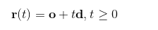

Course Website
Implement ray tracing algorithm
Ray tracing is a technique for generating an image by tracing the path of light through pixels in an image plane and simulating the effects of its encounters with virtual objects.
First need to implement a vector3 class, as a point in the space. At the same time to add in the class for the point of the operation, such as addition, dot multiplication, normalization, etc., while adding a vector3.zeros as a constant, to avoid the calculation after repeated generation.
The construction of light is based on the formula
Where o is the starting point, d is the direction, where d takes the unit vector
Where the three-dimensional objects take the sphere, the sphere's formula is
Where c is the sphere center and r is the radius
To determine whether the light and the ball intersect, just take the light equation into the sphere equation, solution
If the root number is negative, it does not intersect
Next to achieve the camera, here is the perspective of the camera, perspective camera and the naked eye and the real camera is similar to the performance of near large and small observation. Need to define up and down, left and right and angle. As shown below
The following colors are achieved. There are three attributes of color that RGB, similar to vector3, the need to achieve the operation between the color. On the sphere to achieve Phong material, using Phong light model
Add a plane below the sphere in the scene, where the plane is in the form of a checkerboard, but it does not use texture mapping here, but simply divides the plane into some pieces, set to black and white. The plane can be defined by the following formula
It is also easy to calculate whether the light intersects the plane
Finally, the key to calculating the reflection and reflection is to calculate the direction of the reflected light
As can be seen from the figure, the direction of light after reflection is
The reflection of the light is a recursive process, and the final object's color is the color of the reflected light multiplied by the reflectivity plus the color by itself. If the non-stop reflection will result in a large number of operations, and the impact of the subsequent reflection on the color will be smaller and smaller, so no need to calculate a lot of reflection, set a maximum number of reflection can effectively improve performance. The maximum number of reflections set here is 3
The three spheres are provided with different reflectivities, and it is apparent that the difference between the reflectance is 0 and the non-zero, the difference between the reflectance of 0.25 and 0.5 is relatively small, and the left and right spheres have some deformation due to the perspective camera The At the same time because the plane is also set a reflection coefficient, so you can see the sphere on the plane of the reflection.